| 日付 | 2021年2月15日（月） - 2021年2月20日（土） | ||||||
|---|---|---|---|---|---|---|---|
| 山域 | 近畿の山 | ||||||
| メンバー | 単独 | ||||||
| 山行形態 | 5泊6日車中、避難小屋泊 | ||||||
| アクセス | 車 | ||||||
| ルート (Map1) |
|
3日目
昨夜は子供のシュラフとの2枚重ねに毛布を併用して、ものすごく快適だった。
外の様子を伺ってみると吹雪…
とても朝日を拝める状況ではなさそうだ。
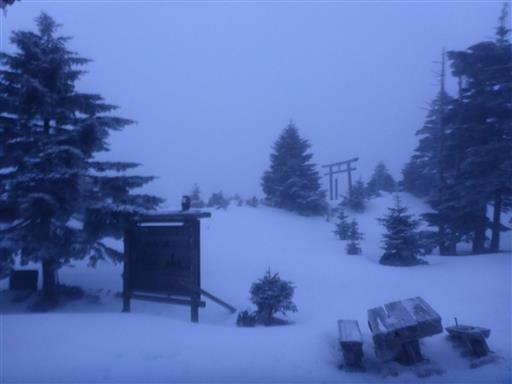
と言っても、本日は来た道を帰るのみなので、気は楽だ。
準備を整えて出発。
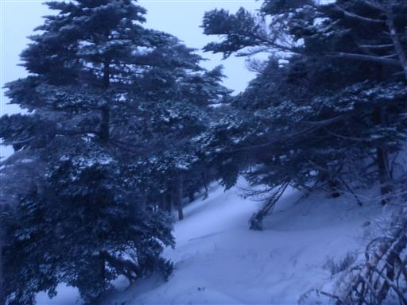
そこそこ視界はある。しかし昨日つけた足跡は全くなくなっている。
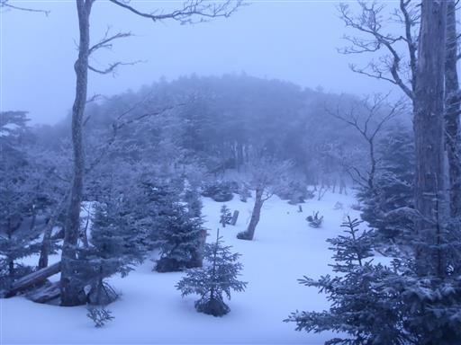
狼平避難小屋まで戻ってくる。
昨日はここまで苦も無く来れたので、まずは一安心。
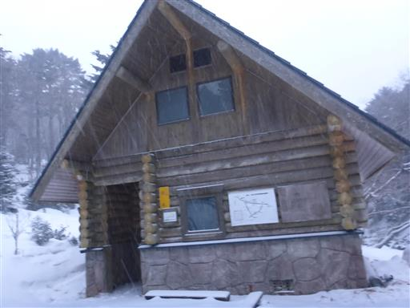
来た道を帰るのはつまらない。双門滝コースを下ってみたい。

下山は不可と書かれている。
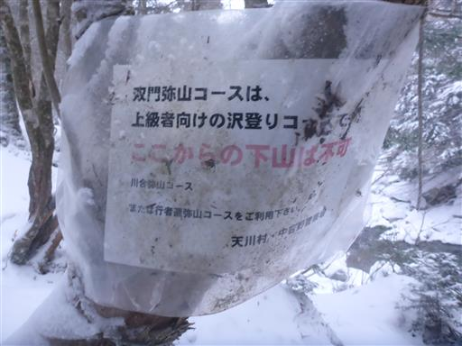
ものは試しでちょっとだけ歩いてみる。
川の端の方は凍り付いている。雪の下が石か氷か分からない。
難易度の高い道を、真冬に、降雪直後に、下りで歩くのはさすがにリスクが高そう。
ここでも大事をとって、このコースを歩くのを断念する。
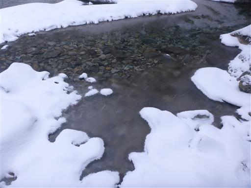
来た道をとぼとぼと帰る。積雪によって、昨日とは状況が一変している。
トラバース道が多い道なのだが、雪が斜めに積もっていて極めて歩きにくい。
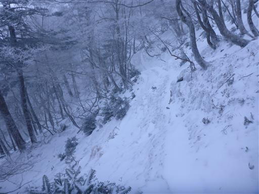
樹林帯の中も吹雪。
唯一の失敗は薄手のインナー手袋しか持ってこなかったこと。手が冷たい。
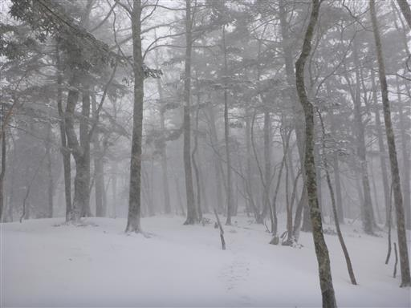
カナビキ尾根分岐。ここも昨日と景色は一変。
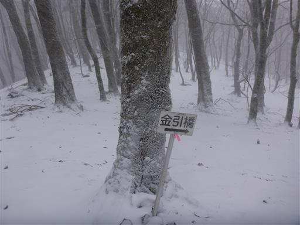
ここで二人の登山者とすれ違う。時間と装備から考えると日帰りだろう。
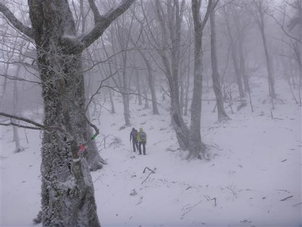
楽勝で下れると思っていた道も雪で難儀する。結構急斜面が多い。
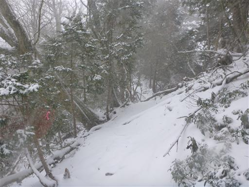
斜めに生える大木。昨日は気付かなかった。
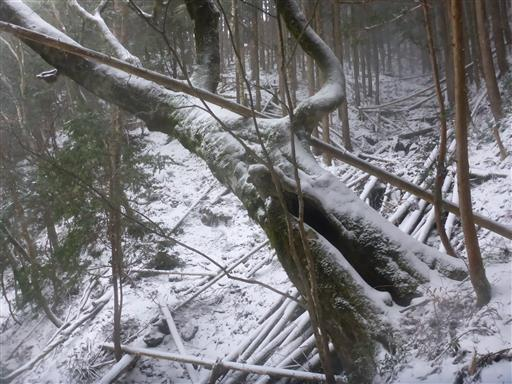
植林地帯に入り、雪の量も少なくなって、ようやく気を緩める。
しかし気を緩めた直後に足をとられて何度か転倒してしまう。
ちょっと気を抜き過ぎた…
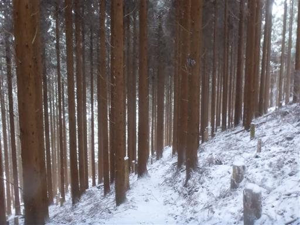
無事下山。あとは車道歩きを30分ほどだ。
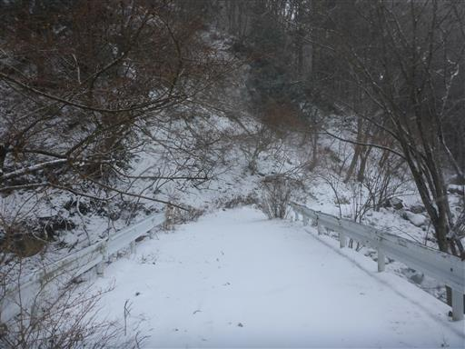
見上げると吹雪。この景色を見ると良く下って来れたものだと思う。
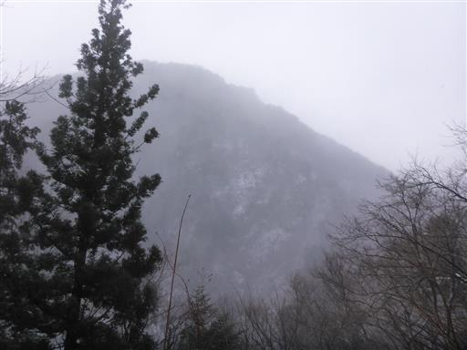
立派なツララ。
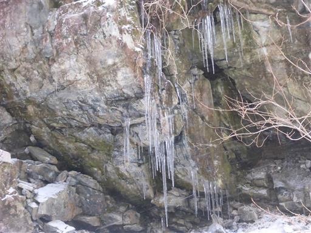
木についたツララ集団。
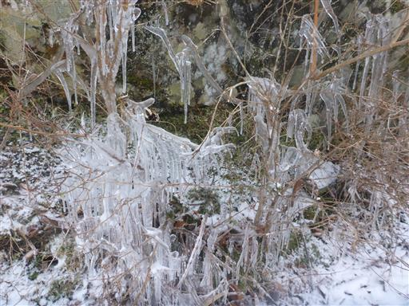
降り続く雪はきれいな氷の結晶だ。
下山したら雨になるかと思っていたらまだまだ雪で、相当気温は低いようだ。
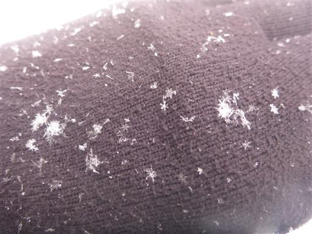
ここでも登山者とすれ違う。時間と装備から考えると小屋泊だろう。
明日も大荒れの天気だと思うのだが…
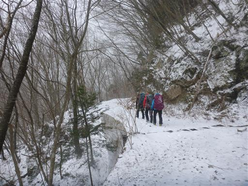
ようやく車を停めた場所まで戻ってくる。
ここから車に降り積もった雪下ろしがまた大変だ。
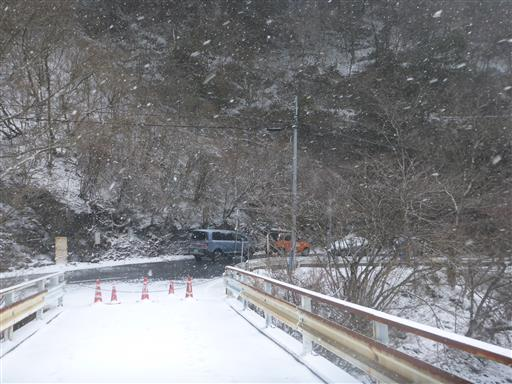
洞川温泉に行きたかったが、残念ながら水曜定休。名前に惹かれていたのだが…
仕方なく天の川温泉に行くことにする。

ひたすら雪雪雪。
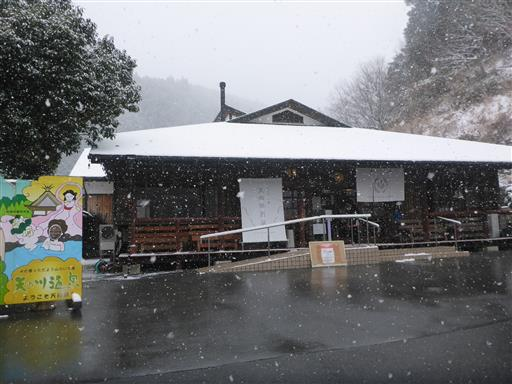
休憩室でゆっくりする。雪景色を眺めながら、ここで少しお仕事。
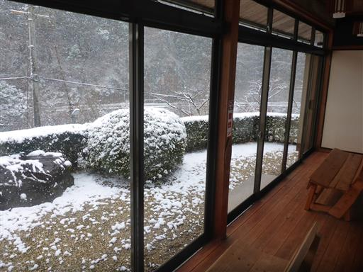
温泉の後は、みたらい渓谷に行ってみることにする。
八経ヶ岳下山後の車での移動時に偶然見かけた渓谷だ。
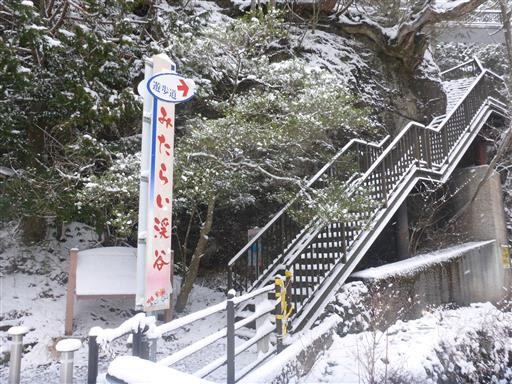
すべり台を滑り落ちるような滝。
車からこの滝がチラっと見えて、ちょっと気になった場所だった。
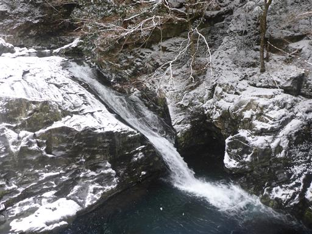
どの程度の長さの渓谷なのか、案内板は雪に埋もれて全く分からない。
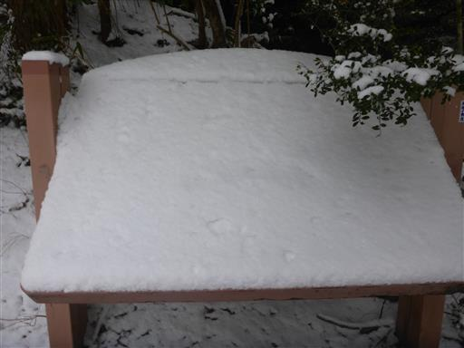
登山靴に履き替えて、ひとまず歩いてみる。階段には足跡がある。
本日も何人か観光客は来ているようだ。

美しい渓谷も雪が積もると寒々しい。
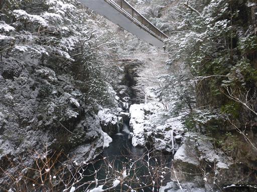
哀伝橋。吊床版橋という変わった形の吊橋だ。
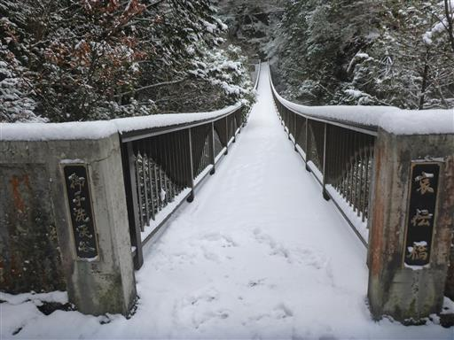
上の方にもう1つ吊橋が見える。
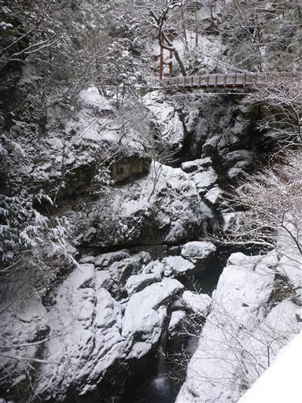
ミタライ峡吊橋。この辺りからもう足跡は消えてしまった。
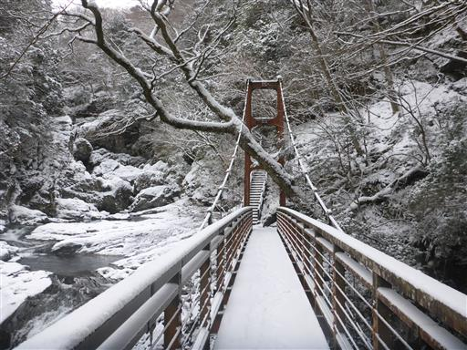
下方には立派な滝が見える。
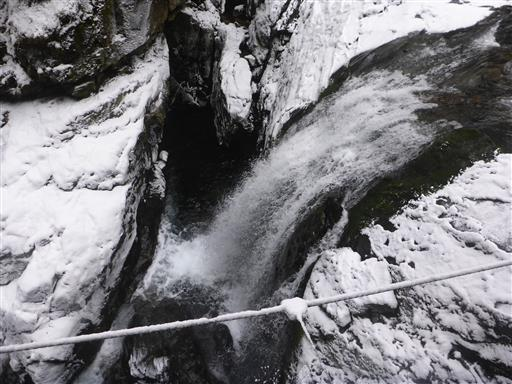
岩がせり出している。頭上注意だ。
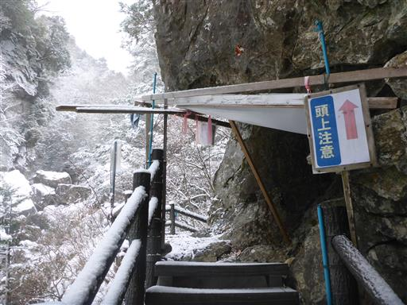
一回転した木。
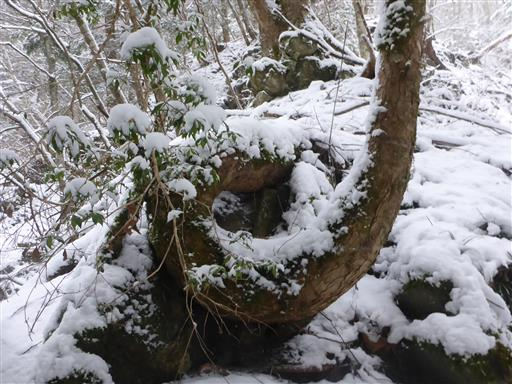
もう1個、立派な滝。
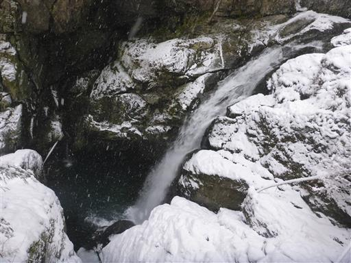
ここから本格的な登山道になりそう。ここまでで引き返すことにする。
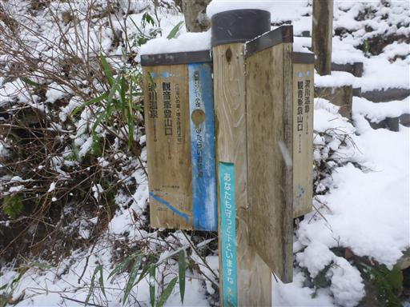
急な階段を慎重に下る。
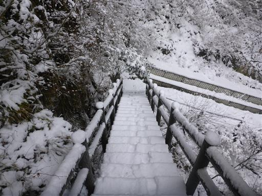
車に乗って、一昨日車中泊した吉野路 黒滝に戻ってくる。
車で30分ほどの距離なのに、景色の違いに驚く。
こちらはほとんど雪が降っていないようだ。ここで次の目的地を三峰山に決める。
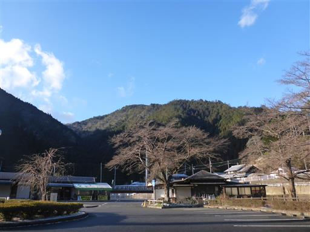
本日の宿泊地は道の駅「伊勢本海道 御杖」。
こちらは道路も駐車場も雪に覆われている。気温はかなり低い。
前の車中泊の時は後部座席に丸くなって寝たが、足を延ばせないのがかなり辛く、
今回はリクライニングシートを倒して寝てみることにする。
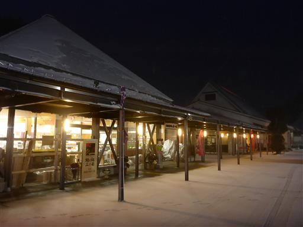